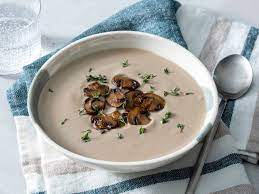

Mushroom Soup

A creamy, easy to make soup.
Cream of mushroom soup is a simple type of soup where a basic roux is thinned
with cream or milk and then mushrooms and/or mushroom broth are added. It is
well known in North America as a common type of condensed canned soup.
Ingredients
- 1/2 Cup Unsalted Butter
- 2 (16 ounce) Packages Fresh Sliced Mushrooms
- 1 Pinch Salt
- 1 Medium Yellow Onion, diced
- 1 1/2 Tablespoon All-Purpose Flour
- 6 Sprigs Fresh Thyme
- 2 Cloves Garlic, peeled
- 4 Cups Chicken Broth, or more to taste
- 1 Cup Water
- 1 Cup Heavy Whipping Cream
Steps
- Melt butter in a large soup pot over medium-high heat. Sauté mushrooms and
1 pinch salt in the melted butter until mushrooms release their juices,
5 to 10 minutes. Reduce heat to medium-low and continue to cook,
stirring often, until juices evaporate and mushrooms are caramelized,
15 to 25 minutes. Set aside a few attractive mushroom slices for garnish later,
if desired.
- Add onion to the mushrooms; cook until onion is soft and translucent,
about 5 minutes.
- Stir flour into the mushroom mixture and cook, stirring often, to remove the
raw flour taste, about 2 minutes.
- Add thyme bundle and garlic cloves, then pour in 4 cups chicken broth and
1 cup water. Reduce heat to low and simmer for 1 hour. Remove and discard thyme
bundle.
- Purée soup with a blender in batches until smooth and thick.
- Stir in cream. If too thick, add a little chicken broth or water. Season with salt
and black pepper.
- Ladle into bowls, and garnish with reserved mushroom slices and thyme leaves.